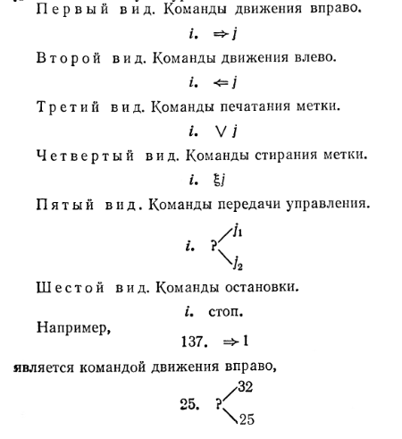
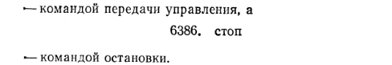
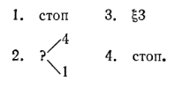
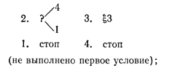

1.2 Программа машины Поста.
Работа машины Поста состоит в том,
что каретка передвигается вдоль ленты н печатает или стирает метки. Эта работа
происходит по инструкции определенного вида, называемой программой. Для машины
Поста возможно составление различных программ. Посмотрим, как устроена
программа. Каждая программа машины Поста состоит из команд. Командой машины
Поста будем называть выражение, имеющее один из следующих шести видов (буквы i,
j, j1, j2 означают всюду натуральные
числа 1, 2, 3, 4, 5, ... ):


Рис. 5
Число i, стоящее в начале команды, называется номером команды. Так, у приведенных только что команд номера суть соответственно 137, 25 и 6386. Число j, стоящее в конце команды (а у команд передачи управления - каждое из чисел j1, и j2), будем называть отсылкой (при этом в команде передачи управления j1, - верхней. а j2-нижней отсылкой). У команд остановки нет отсылки. Так, у приведенных только что команд отсылками служат числа 1, 32, 25, причем 32- верхняя отсылка, а 25- нижняя отсылка. Программой машины Поста будем называть конечный непустой (т. е. содержащий хотя бы одну команду) список команд машины Поста, обладающий следующими двумя свойствами: 1) На первом месте в этом списке стоит команда с номером 1, на втором месте (если оно есть) -команда с номером 2 Н т. д.; вообще на k-м месте стоит команда с номером k. 2) Отсылка любой из команд списка совпадает с номером некоторой (другой или той же самой) команды списка (более точно: для каждой отсылка каждой ко-манды списка найдется в списке такая команда, номер которой равен рассматриваемой отсылке). Например, следующий список будет программой машины Поста:

Рис. 6
А эти два списка не будут программами машины Поста, хотя и составлены из команд машины Поста:

Для наглядности
программы машины Поста мы будем записывать столбиком. Число команд программы
называется длиной
программы.